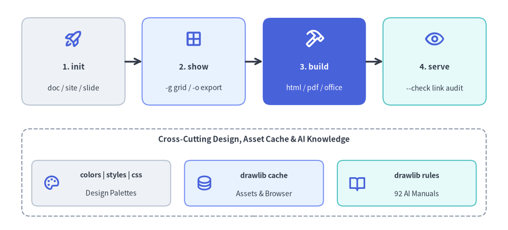
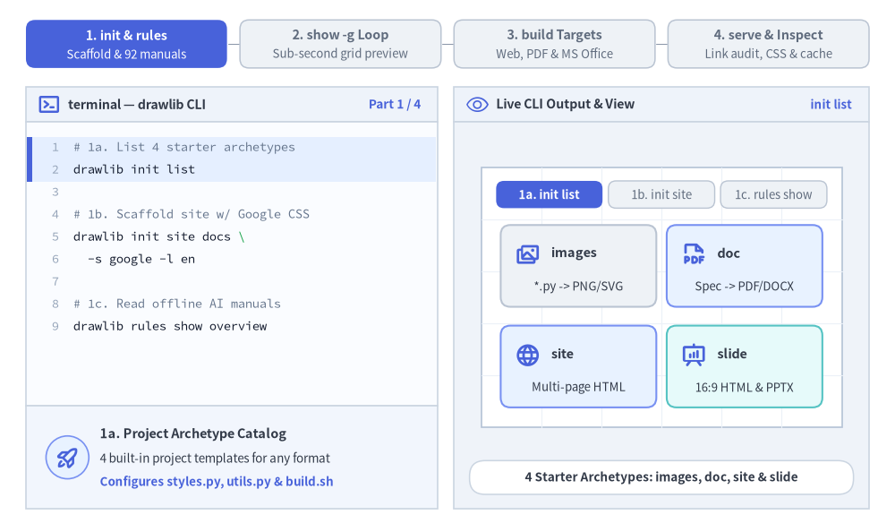
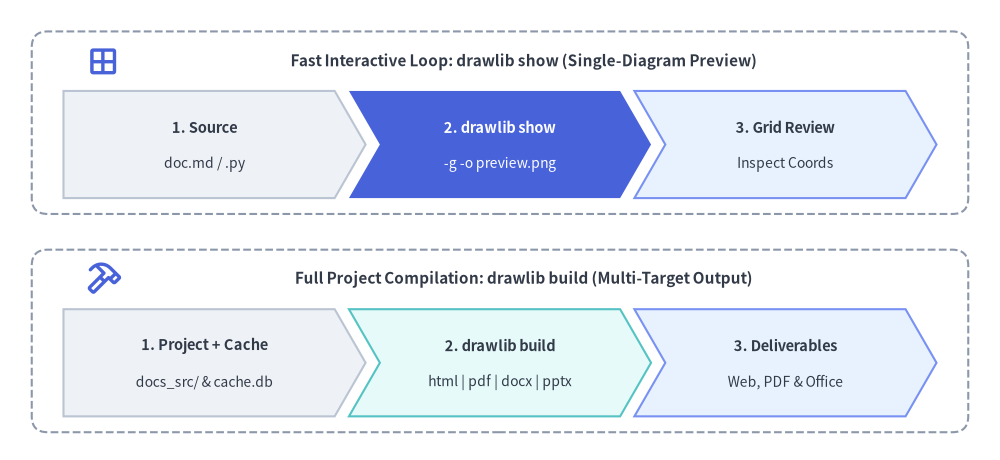

CLI Reference Manual
Drawlib provides a unified Command Line Interface (drawlib) for compiling documentation, extracting standalone visual diagrams, managing cache assets, validating links, and inspecting built-in design systems.

Source Code
from drawlib.canvas import save, setup
from drawlib.icons import phosphor
from drawlib.lines import line
from drawlib.shapes import rectangle
from drawlib.styles import Styles
from drawlib.text import text
setup(width=128, height=58)
# Top Row: Primary 4-Stage Authoring & Publishing Pipeline
stages = [
(18.5, "1. init", "doc / site / slide", Styles.Neutral, Styles.DarkBold, Styles.Dark, phosphor.rocket_launch, Styles.PrimaryBold),
(48.8, "2. show", "-g grid / -o export", Styles.PrimaryNeutral, Styles.DarkBold, Styles.Dark, phosphor.grid_four, Styles.PrimaryBold),
(79.2, "3. build", "html / pdf / office", Styles.PrimaryFlat, Styles.WhiteBold, Styles.White, phosphor.hammer, Styles.WhiteBold),
(109.5, "4. serve", "--check link audit", Styles.SecondaryNeutral, Styles.DarkBold, Styles.Dark, phosphor.eye, Styles.PrimaryBold),
]
for sx, title, sub, st, tst, sub_st, icon_fn, icon_st in stages:
rectangle((sx, 42.5), width=26, height=22, style=st.patch(shape_r=2.0))
icon_fn((sx, 48.2), width=4.8, style=icon_st)
text((sx, 41.2), title, style=tst.patch(text_size=11.0))
text((sx, 35.8), sub, style=sub_st.patch(text_size=10.0))
line((31.5, 42.5), (35.8, 42.5), arrow_head="->", style=Styles.DarkBold)
line((61.8, 42.5), (66.2, 42.5), arrow_head="->", style=Styles.DarkBold)
line((92.2, 42.5), (96.5, 42.5), arrow_head="->", style=Styles.DarkBold)
# Bottom Row: Supporting Design Systems, Cache & AI Rules Subcommands
rectangle((64, 14.5), width=117, height=22, style=Styles.MutedDashed.patch(shape_r=2.0))
text((64, 22.8), "Cross-Cutting Design, Asset Cache & AI Knowledge", style=Styles.DarkBold.patch(text_size=11.0))
bottom_cards = [
(25.5, "colors | styles | css", "Design Palettes", Styles.Neutral, phosphor.palette),
(64.0, "drawlib cache", "Assets & Browser", Styles.PrimaryNeutral, phosphor.database),
(102.5, "drawlib rules", "92 AI Manuals", Styles.SecondaryNeutral, phosphor.book_open),
]
for bx, btitle, bsub, bst, bicon in bottom_cards:
rectangle((bx, 11.8), width=35, height=11.5, style=bst.patch(shape_r=1.5))
bicon((bx - 12.5, 11.8), width=4.4, style=Styles.PrimaryBold)
text((bx + 2.5, 13.8), btitle, style=Styles.DarkBold.patch(text_size=10.2))
text((bx + 2.5, 9.2), bsub, style=Styles.Dark.patch(text_size=10.0))
save()
1. Interactive CLI Workflow Tour
From project bootstrapping (init and rules) to sub-second coordinate grid previews (show -g), multi-format compilation (build), and pre-flight link and asset verification (serve --check and cache), all nine drawlib subcommands work together in one cohesive loop:

Source Code
from __future__ import annotations
from drawlib.anim import Animation
from drawlib.canvas import save, setup
from drawlib.icons import client, devops, phosphor, workspace
from drawlib.icons import code as code_icons
from drawlib.lines import line
from drawlib.shapes import circle, rectangle
from drawlib.smartarts import SourceCode, SourceCodeStyles
from drawlib.styles import Styles
from drawlib.text import text
W, H = 138.0, 82.0
setup(width=W, height=H)
anim = Animation(fps=10.0, loop=0)
CODE_TEXT_SIZE = 10.0
PT_TO_CANVAS = W / 720.0
FONT_CANVAS = CODE_TEXT_SIZE * PT_TO_CANVAS
LINE_H = FONT_CANVAS * 1.8
PAD_Y = FONT_CANVAS * 1.2
CODE_STYLES = SourceCodeStyles.get("default", font_lang="en", text_size=CODE_TEXT_SIZE).patch(
box_style=Styles.Neutral.patch(shape_fill_color=(0, 0, 0, 0), shape_line_width=0),
)
PANE_HEADER = Styles.Neutral.patch(
shape_fill_color=(238, 243, 250),
shape_line_color=(203, 213, 225),
shape_line_width=1.2,
shape_r=0.0,
)
EDITOR_BODY = Styles.Neutral.patch(
shape_fill_color=(250, 252, 255),
shape_line_color=(203, 213, 225),
shape_line_width=1.2,
shape_r=0.0,
)
TAKEAWAY_BODY = Styles.Neutral.patch(
shape_fill_color=(242, 246, 253),
shape_line_color=(203, 213, 225),
shape_line_width=1.2,
shape_r=0.0,
)
STUDIO_BODY = Styles.Neutral.patch(
shape_fill_color=(239, 243, 249),
shape_line_color=(203, 213, 225),
shape_line_width=1.2,
shape_r=0.0,
)
PART_ITEMS = [
("1. init & rules", "Scaffold & 92 manuals"),
("2. show -g Loop", "Sub-second grid preview"),
("3. build Targets", "Web, PDF & MS Office"),
("4. serve & Inspect", "Link audit, CSS & cache"),
]
def draw_step_bar(active_part: int) -> None:
"""Draw top 4-part progress bar (active_part is 1..4)."""
pill_w = 31.0
pill_h = 7.4
gap = 2.0
start_x = 4.0 + pill_w / 2.0
cy = 75.2
for idx, (label, sublabel) in enumerate(PART_ITEMS, start=1):
cx = start_x + (idx - 1) * (pill_w + gap)
if idx > 1:
prev_cx = cx - (pill_w + gap)
line(
(prev_cx + pill_w / 2.0 + 0.2, cy),
(cx - pill_w / 2.0 - 0.2, cy),
style=Styles.PrimaryBold if idx <= active_part else Styles.MutedThin,
)
if idx == active_part:
st = Styles.PrimaryFlat.patch(shape_r=1.4)
tst = Styles.WhiteBold.patch(text_size=10.3)
sub_tst = Styles.White.patch(text_size=9.5)
elif idx < active_part:
st = Styles.PrimaryNeutral.patch(shape_r=1.4, shape_line_width=1.1)
tst = Styles.PrimaryBold.patch(text_size=10.3)
sub_tst = Styles.Primary.patch(text_size=9.5)
else:
st = Styles.Neutral.patch(shape_r=1.4, shape_line_width=1.1)
tst = Styles.MutedBold.patch(text_size=10.3)
sub_tst = Styles.Muted.patch(text_size=9.5)
rectangle((cx, cy), width=pill_w, height=pill_h, style=st)
text((cx, cy + 1.35), label, style=tst)
text((cx, cy - 1.55), sublabel, style=sub_tst)
def draw_left_pane(
active_part: int,
code_lines: list[str],
hl_range: tuple[int, int],
icon_fn: object,
summary_title: str,
summary_line1: str,
summary_line2: str,
) -> None:
"""Draw left terminal CLI pane + bottom concept takeaway card."""
x0, w = 4.0, 63.5
cx = x0 + w / 2.0
top_y = 63.2
header_h = 5.4
editor_h = 43.8
takeaway_h = 15.8
rectangle((cx, top_y + header_h / 2.0), width=w, height=header_h, style=PANE_HEADER)
phosphor.terminal_window((x0 + 3.6, top_y + header_h / 2.0), width=3.5, style=Styles.PrimaryBold)
text(
(x0 + 6.5, top_y + header_h / 2.0),
"terminal — drawlib CLI",
style=Styles.DarkBold.patch(text_size=10.2, halign="left"),
)
text(
(x0 + w - 2.6, top_y + header_h / 2.0),
f"Part {active_part} / 4",
style=Styles.PrimaryBold.patch(text_size=9.8, halign="right"),
)
rectangle((cx, top_y - editor_h / 2.0), width=w, height=editor_h, style=EDITOR_BODY)
hl_start, hl_end = hl_range
hl_top = top_y - PAD_Y - hl_start * LINE_H
hl_bot = top_y - PAD_Y - (hl_end + 1) * LINE_H
hl_cy = (hl_top + hl_bot) / 2.0
hl_h = hl_top - hl_bot
rectangle(
(cx, hl_cy),
width=w - 0.6,
height=hl_h,
style=Styles.Neutral.patch(shape_fill_color=(229, 239, 255), shape_line_width=0),
)
rectangle(
(x0 + 0.55, hl_cy),
width=0.9,
height=hl_h,
style=Styles.PrimaryFlat.patch(shape_line_width=0),
)
SourceCode.draw(
xy=(x0, top_y),
width=w,
code="\n".join(code_lines),
styles=CODE_STYLES,
code_lang="bash",
show_linenum=True,
align="top_left",
)
take_cy = 3.6 + takeaway_h / 2.0
rectangle((cx, take_cy), width=w, height=takeaway_h, style=TAKEAWAY_BODY)
circle(
(x0 + 6.4, take_cy),
radius=3.3,
style=Styles.PrimaryNeutral.patch(shape_line_width=1.2),
)
icon_fn((x0 + 6.4, take_cy), width=3.8, style=Styles.PrimaryBold) # type: ignore[operator]
text(
(x0 + 11.4, take_cy + 3.6),
summary_title,
style=Styles.DarkBold.patch(text_size=10.4, halign="left"),
)
text(
(x0 + 11.4, take_cy - 0.2),
summary_line1,
style=Styles.Dark.patch(text_size=9.7, halign="left"),
)
text(
(x0 + 11.4, take_cy - 3.8),
summary_line2,
style=Styles.PrimaryBold.patch(text_size=9.6, halign="left"),
)
def draw_output_studio(param_badge: str, footer_caption: str) -> tuple[float, float]:
"""Draw right CLI output & artifact inspector shell and footer."""
x0, w = 70.0, 64.0
cx = x0 + w / 2.0
top_y = 63.2
header_h = 5.4
body_h = 59.6
rectangle((cx, top_y + header_h / 2.0), width=w, height=header_h, style=PANE_HEADER)
phosphor.eye((x0 + 3.6, top_y + header_h / 2.0), width=3.5, style=Styles.Primary)
text(
(x0 + 6.5, top_y + header_h / 2.0),
"Live CLI Output & View",
style=Styles.DarkBold.patch(text_size=10.2, halign="left"),
)
text(
(x0 + w - 2.6, top_y + header_h / 2.0),
param_badge,
style=Styles.PrimaryBold.patch(text_size=9.6, halign="right"),
)
rectangle((cx, 3.6 + body_h / 2.0), width=w, height=body_h, style=STUDIO_BODY)
sheet_cx, sheet_cy = cx, 36.2
sheet_w, sheet_h = 55.6, 40.0
sx0, sy0 = sheet_cx - sheet_w / 2.0, sheet_cy - sheet_h / 2.0
rectangle(
(sheet_cx, sheet_cy),
width=sheet_w,
height=sheet_h,
style=Styles.Neutral.patch(
shape_fill_color=(255, 255, 255),
shape_line_color=(180, 194, 214),
shape_line_width=1.2,
),
)
g_st = Styles.MutedThin.patch(line_color=(236, 241, 248), line_width=0.8)
for gx in range(1, 6):
vx = sx0 + gx * (sheet_w / 6.0)
line((vx, sy0), (vx, sy0 + sheet_h), style=g_st)
for gy in range(1, 5):
vy = sy0 + gy * (sheet_h / 5.0)
line((sx0, vy), (sx0 + sheet_w, vy), style=g_st)
rectangle(
(cx, 8.4),
width=59.2,
height=5.2,
style=Styles.Neutral.patch(
shape_fill_color=(255, 255, 255),
shape_line_color=(203, 213, 225),
shape_line_width=1.1,
shape_r=2.4,
),
text=footer_caption,
text_style=Styles.DarkBold.patch(text_size=9.8),
)
return sheet_cx, sheet_cy
def draw_sub_pills(scx: float, labels: list[str], active_idx: int) -> None:
"""Draw 3-step tracker pills near the top of the studio sheet."""
pw, ph, pgap = 16.4, 4.2, 0.9
p_start = scx - (3 * pw + 2 * pgap) / 2.0 + pw / 2.0
for idx, lbl in enumerate(labels):
px = p_start + idx * (pw + pgap)
if idx == active_idx:
pst = Styles.PrimaryFlat.patch(shape_r=1.2)
ptst = Styles.WhiteBold.patch(text_size=9.5)
elif idx < active_idx:
pst = Styles.PrimaryNeutral.patch(shape_r=1.2, shape_line_width=1.0)
ptst = Styles.PrimaryBold.patch(text_size=9.5)
else:
pst = Styles.Neutral.patch(shape_r=1.2, shape_line_width=1.0)
ptst = Styles.Muted.patch(text_size=9.5)
rectangle((px, 52.0), width=pw, height=ph, style=pst, text=lbl, text_style=ptst)
# =========================================================================
# Part 1: 1. init & rules (3 frames: 3.3 + 3.3 + 3.5 = 10.1s)
# =========================================================================
PART1_CODE = [
"# 1a. List 4 starter archetypes",
"drawlib init list",
"",
"# 1b. Scaffold site w/ Google CSS",
"drawlib init site docs \\",
" -s google -l en",
"",
"# 1c. Read offline AI manuals",
"drawlib rules show overview",
]
PART1_STATES = [
(
"1a",
3.3,
(0, 1),
"init list",
"4 Starter Archetypes: images, doc, site & slide",
"1a. Project Archetype Catalog",
"4 built-in project templates for any format",
"Configures styles.py, utils.py & build.sh",
),
(
"1b",
3.3,
(3, 5),
"init site -s",
"Scaffolds docs_src/ With Google Theme & Fonts",
"1b. Zero-Config Project Bootstrap",
"Creates docs_src/, navbar.md & _assets/",
"-s google syncs style.css and styles.py",
),
(
"1c",
3.5,
(7, 8),
"92 AI Guides",
"92 Offline Reference Guides + Companion PNGs",
"1c. Embedded AI Knowledge Base",
"92 offline manuals for geometry, styles & API",
"Auto-renders companion illustrations locally",
),
]
for p1_idx, (mode, dur, hl_rng, badge, foot, s_t, s_1, s_2) in enumerate(PART1_STATES):
with anim.frame(duration=dur):
draw_step_bar(1)
draw_left_pane(1, PART1_CODE, hl_rng, phosphor.rocket_launch, s_t, s_1, s_2)
scx, _ = draw_output_studio(badge, foot)
draw_sub_pills(scx, ["1a. init list", "1b. init site", "1c. rules show"], p1_idx)
if mode == "1a":
archetypes = [
(89.2, 41.0, "images", "*.py -> PNG/SVG", phosphor.images, Styles.Neutral),
(114.8, 41.0, "doc", "Spec -> PDF/DOCX", phosphor.file_pdf, Styles.PrimaryNeutral),
(89.2, 25.5, "site", "Multi-page HTML", phosphor.globe, Styles.PrimaryNeutral),
(114.8, 25.5, "slide", "16:9 HTML & PPTX", phosphor.presentation_chart, Styles.SecondaryNeutral),
]
for ax, ay, name, desc, ic_fn, cst in archetypes:
rectangle((ax, ay), width=24.0, height=12.6, style=cst.patch(shape_r=1.5))
ic_fn((ax - 7.8, ay + 1.8), width=4.0, style=Styles.PrimaryBold)
text((ax - 4.2, ay + 2.0), name, style=Styles.DarkBold.patch(text_size=10.4, halign="left"))
text((ax, ay - 3.2), desc, style=Styles.Dark.patch(text_size=9.5))
elif mode == "1b":
rectangle(
(scx, 44.5),
width=50.0,
height=5.6,
style=Styles.PrimaryFlat.patch(shape_r=1.3),
)
phosphor.folder_open((79.8, 44.5), width=3.6, style=Styles.WhiteBold)
text((82.6, 44.5), "docs_src/", style=Styles.WhiteBold.patch(text_size=10.2, halign="left"))
text((124.8, 44.5), "-s google", style=Styles.White.patch(text_size=9.5, halign="right"))
rows = [
(37.6, "styles.py & utils.py", "Tokens & helpers", "py", Styles.PrimaryNeutral),
(31.6, "navbar.md & index.md", "Sidebar & hero", "md", Styles.Neutral),
(25.6, "_assets/ & style.css", "Media & CSS", "folder", Styles.Neutral),
(19.6, "build.sh", "1-cmd compiler", "sh", Styles.SecondaryNeutral),
]
for ry, rname, rdesc, rkind, rst in rows:
rectangle((scx, ry), width=50.0, height=5.0, style=rst.patch(shape_r=1.1))
if rkind == "py":
code_icons.python((79.8, ry), width=3.0, style=Styles.Neutral)
elif rkind == "md":
phosphor.file_text((79.8, ry), width=3.1, style=Styles.PrimaryBold)
elif rkind == "folder":
phosphor.folder((79.8, ry), width=3.1, style=Styles.PrimaryBold)
else:
phosphor.file_code((79.8, ry), width=3.1, style=Styles.PrimaryBold)
text((82.6, ry), rname, style=Styles.DarkBold.patch(text_size=9.6, halign="left"))
text((125.0, ry), rdesc, style=Styles.Dark.patch(text_size=9.5, halign="right"))
else:
rectangle((89.8, 33.0), width=26.6, height=27.0, style=Styles.Neutral.patch(shape_r=1.5))
phosphor.book_open((80.2, 42.6), width=3.8, style=Styles.PrimaryBold)
text((83.2, 42.6), "overview", style=Styles.DarkBold.patch(text_size=10.2, halign="left"))
text((89.8, 36.8), "92 AI Rule Guides", style=Styles.PrimaryBold.patch(text_size=9.6))
text((89.8, 31.8), "• (0,0) Bottom-Left", style=Styles.Dark.patch(text_size=9.5))
text((89.8, 27.4), "• 50%+ Neutral Card", style=Styles.Dark.patch(text_size=9.5))
text((89.8, 23.0), "• 720pt Font Math", style=Styles.Dark.patch(text_size=9.5))
line((103.3, 33.0), (106.8, 33.0), arrow_head="->", style=Styles.DarkBold)
rectangle((117.4, 33.0), width=20.4, height=27.0, style=Styles.PrimaryNeutral.patch(shape_r=1.5))
phosphor.images((117.4, 42.4), width=4.0, style=Styles.PrimaryBold)
text((117.4, 37.2), "rules/*.png", style=Styles.DarkBold.patch(text_size=9.7))
rectangle((117.4, 28.4), width=15.0, height=10.5, style=Styles.White.patch(shape_r=1.0))
line((112.0, 25.0), (112.0, 32.0), arrow_head="->", style=Styles.PrimaryBold)
line((112.0, 25.0), (123.0, 25.0), arrow_head="->", style=Styles.PrimaryBold)
text((118.2, 29.0), "(0,0)", style=Styles.PrimaryBold.patch(text_size=9.5))
# =========================================================================
# Part 2: 2. show -g Loop (3 frames: 3.3 + 3.3 + 3.5 = 10.1s)
# =========================================================================
PART2_CODE = [
"# 2a. Index blocks in Markdown",
"drawlib show page.md",
"",
"# 2b. Fast 10u/5u grid preview",
"drawlib show page.md arch.png \\",
" -g -o .drawlib/scratch/g.png",
"",
"# 2c. Standalone .py w/ styles",
"drawlib show script.py \\",
" -s styles.py -u utils.py \\",
" -o out.png",
]
PART2_STATES = [
(
"2a",
3.3,
(0, 1),
"Block Table",
"Lists Embedded Blocks (#0 hero.png, #1 arch.png)",
"2a. Inspect Embedded Blocks",
"Omitting target prints indexed block table",
"Shows block index, filename & fence mode",
),
(
"2b",
3.3,
(3, 5),
"-g < 1s Grid",
"Renders 10u/5u Coordinate Grid to .drawlib/scratch/",
"2b. Sub-Second Grid Preview (-g)",
"Target by explicit filename (arch.png)",
"10u/5u grid catches clipping & margins fast",
),
(
"2c",
3.5,
(7, 10),
"-s & -u Parity",
"Previews Standalone .py With Project styles.py",
"2c. Standalone Script Export",
"-s styles.py & -u utils.py inject tokens",
"Guarantees 100% parity with full builds",
),
]
for p2_idx, (mode, dur, hl_rng, badge, foot, s_t, s_1, s_2) in enumerate(PART2_STATES):
with anim.frame(duration=dur):
draw_step_bar(2)
draw_left_pane(2, PART2_CODE, hl_rng, phosphor.grid_four, s_t, s_1, s_2)
scx, _ = draw_output_studio(badge, foot)
draw_sub_pills(scx, ["2a. Block Index", "2b. Grid (-g)", "2c. .py Preview"], p2_idx)
if mode == "2a":
rectangle(
(scx, 44.2),
width=50.0,
height=5.2,
style=Styles.Neutral.patch(shape_fill_color=(232, 238, 248), shape_r=1.1),
)
text((79.5, 44.2), "Idx", style=Styles.DarkBold.patch(text_size=9.6, halign="left"))
text((89.0, 44.2), "Block File", style=Styles.DarkBold.patch(text_size=9.6, halign="left"))
text((124.5, 44.2), "Fence", style=Styles.DarkBold.patch(text_size=9.6, halign="right"))
rectangle((scx, 37.6), width=50.0, height=5.8, style=Styles.Neutral.patch(shape_r=1.1))
text((79.5, 37.6), "#0", style=Styles.DarkBold.patch(text_size=9.6, halign="left"))
text((89.0, 37.6), "hero.png", style=Styles.DarkBold.patch(text_size=9.7, halign="left"))
text((124.5, 37.6), "code=fold", style=Styles.Dark.patch(text_size=9.5, halign="right"))
rectangle((scx, 30.8), width=50.0, height=5.8, style=Styles.PrimaryNeutral.patch(shape_r=1.1))
text((79.5, 30.8), "#1", style=Styles.PrimaryBold.patch(text_size=9.6, halign="left"))
text((89.0, 30.8), "arch.png", style=Styles.PrimaryBold.patch(text_size=9.7, halign="left"))
text((124.5, 30.8), "code=show", style=Styles.PrimaryBold.patch(text_size=9.5, halign="right"))
rectangle((scx, 22.4), width=50.0, height=6.4, style=Styles.SecondaryNeutral.patch(shape_r=1.3))
phosphor.check_circle((80.2, 22.4), width=3.6, style=Styles.PrimaryBold)
text(
(83.2, 22.4),
"Target arch.png directly in < 1s",
style=Styles.DarkBold.patch(text_size=9.6, halign="left"),
)
elif mode == "2b":
gx0, gy0, gw, gh = 80.0, 22.5, 45.0, 22.5
rectangle(
(gx0 + gw / 2.0, gy0 + gh / 2.0),
width=gw,
height=gh,
style=Styles.White.patch(shape_line_color=(96, 165, 250), shape_line_width=1.3),
)
for step in range(1, 5):
vx = gx0 + step * 9.0
st_g = (
Styles.Primary.patch(line_width=0.9)
if step % 2 == 0
else Styles.MutedDashed.patch(line_width=0.7)
)
line((vx, gy0), (vx, gy0 + gh), style=st_g)
for step in range(1, 3):
hy = gy0 + step * 7.5
line((gx0, hy), (gx0 + gw, hy), style=Styles.Primary.patch(line_width=0.9))
text((gx0, gy0 - 2.3), "0", style=Styles.PrimaryBold.patch(text_size=9.5))
text((gx0 + 18.0, gy0 - 2.3), "20", style=Styles.PrimaryBold.patch(text_size=9.5))
text((gx0 + 36.0, gy0 - 2.3), "40", style=Styles.PrimaryBold.patch(text_size=9.5))
text((gx0 - 2.4, gy0 + 7.5), "10", style=Styles.PrimaryBold.patch(text_size=9.5))
text((gx0 - 2.4, gy0 + 15.0), "20", style=Styles.PrimaryBold.patch(text_size=9.5))
rectangle(
(91.5, 33.8),
width=14.0,
height=8.5,
style=Styles.Neutral.patch(shape_r=1.2),
text="Gateway",
text_style=Styles.DarkBold.patch(text_size=9.6),
)
rectangle(
(113.5, 33.8),
width=14.0,
height=8.5,
style=Styles.PrimaryNeutral.patch(shape_r=1.2),
text="SQL DB",
text_style=Styles.DarkBold.patch(text_size=9.6),
)
line((98.5, 33.8), (106.5, 33.8), arrow_head="->", style=Styles.DarkBold)
rectangle(
(116.8, 44.8),
width=16.5,
height=4.0,
style=Styles.PrimaryFlat.patch(shape_r=1.0),
text="-g 10u/5u",
text_style=Styles.WhiteBold.patch(text_size=9.5),
)
else:
inputs = [
(42.5, "script.py", code_icons.python, Styles.PrimaryNeutral, True),
(33.2, "-s styles.py", phosphor.palette, Styles.Neutral, False),
(23.9, "-u utils.py", phosphor.sliders, Styles.Neutral, False),
]
for iy, ilbl, i_fn, ist, is_png in inputs:
rectangle((86.2, iy), width=19.8, height=6.8, style=ist.patch(shape_r=1.2))
if is_png:
i_fn((78.8, iy), width=3.0, style=Styles.Neutral)
else:
i_fn((78.8, iy), width=3.2, style=Styles.PrimaryBold)
text((81.2, iy), ilbl, style=Styles.DarkBold.patch(text_size=9.5, halign="left"))
line((96.1, iy), (100.8, 33.2), arrow_head="->", style=Styles.DarkBold)
rectangle(
(105.8, 33.2),
width=10.0,
height=10.0,
style=Styles.PrimaryFlat.patch(shape_r=1.4),
text="show",
text_style=Styles.WhiteBold.patch(text_size=9.8),
)
line((110.8, 33.2), (114.4, 33.2), arrow_head="->", style=Styles.DarkBold)
rectangle((121.0, 33.2), width=13.2, height=19.0, style=Styles.SecondaryNeutral.patch(shape_r=1.4))
phosphor.images((121.0, 37.8), width=4.2, style=Styles.PrimaryBold)
text((121.0, 31.8), "out.png", style=Styles.DarkBold.patch(text_size=9.8))
text((121.0, 27.2), "Synced!", style=Styles.PrimaryBold.patch(text_size=9.5))
# =========================================================================
# Part 3: 3. build Targets (3 frames: 3.3 + 3.3 + 3.5 = 10.1s)
# =========================================================================
PART3_CODE = [
"# 3a. Web & GitHub Markdown",
"drawlib build html docs_src/",
"drawlib build markdown docs_src/",
"# 3b. Vector PDF & MS Word",
"drawlib build pdf doc_src/ --toc",
"drawlib build docx doc_src/",
"# 3c. 16:9 Slide Deck & PPTX",
"drawlib build slide slide_src/",
"drawlib build pptx slide_src/",
"# (+ build image scripts/ -g)",
]
PART3_STATES = [
(
"3a",
3.3,
(0, 2),
"Web + GitHub",
"Compiles Static Website + GitHub-Flavored Markdown",
"3a. Web & Repository Targets",
"build html generates searchable static site",
"build markdown exports GFM + <doc>_images/",
),
(
"3b",
3.3,
(3, 5),
"PDF + Word",
"Compiles Vector A4 PDF (--toc) + Native Word (.docx)",
"3b. Linear Spec & Office Docs",
"build pdf renders vector A4 w/ auto TOC",
"build docx produces editable native MS Word",
),
(
"3c",
3.5,
(6, 9),
"16:9 + PPTX",
"7 Build Targets: HTML, MD, PDF, DOCX, Slide, PPTX, Img",
"3c. Presentations & Batch Images",
"build slide adds ?presenter=1 dual view",
"build pptx exports editable 16:9 slides + notes",
),
]
for p3_idx, (mode, dur, hl_rng, badge, foot, s_t, s_1, s_2) in enumerate(PART3_STATES):
with anim.frame(duration=dur):
draw_step_bar(3)
draw_left_pane(3, PART3_CODE, hl_rng, phosphor.hammer, s_t, s_1, s_2)
scx, _ = draw_output_studio(badge, foot)
draw_sub_pills(scx, ["3a. HTML & MD", "3b. PDF & DOCX", "3c. Slide & PPTX"], p3_idx)
if mode == "3a":
rectangle((83.6, 33.4), width=15.0, height=19.0, style=Styles.Neutral.patch(shape_r=1.4))
phosphor.folder_open((83.6, 38.2), width=4.0, style=Styles.PrimaryBold)
text((83.6, 32.2), "docs_src/", style=Styles.DarkBold.patch(text_size=9.7))
text((83.6, 27.6), "*.md", style=Styles.Dark.patch(text_size=9.5))
line((91.1, 37.5), (98.4, 40.8), arrow_head="->", style=Styles.DarkBold)
line((91.1, 29.5), (98.4, 26.0), arrow_head="->", style=Styles.DarkBold)
rectangle((113.0, 40.8), width=29.0, height=11.6, style=Styles.PrimaryNeutral.patch(shape_r=1.4))
phosphor.globe((102.5, 40.8), width=4.2, style=Styles.PrimaryBold)
text((106.2, 42.8), "docs_html/", style=Styles.DarkBold.patch(text_size=10.2, halign="left"))
text((106.2, 38.4), "Sidebar & Search", style=Styles.Dark.patch(text_size=9.5, halign="left"))
rectangle((113.0, 26.0), width=29.0, height=11.6, style=Styles.SecondaryNeutral.patch(shape_r=1.4))
devops.github((102.5, 26.0), width=3.9, style=Styles.Neutral)
text((106.2, 28.0), "docs/ (*.md)", style=Styles.DarkBold.patch(text_size=10.2, halign="left"))
text((106.2, 23.6), "GFM + _images/", style=Styles.Dark.patch(text_size=9.5, halign="left"))
elif mode == "3b":
rectangle((83.6, 33.4), width=15.0, height=19.0, style=Styles.Neutral.patch(shape_r=1.4))
phosphor.folder_open((83.6, 38.2), width=4.0, style=Styles.PrimaryBold)
text((83.6, 32.2), "doc_src/", style=Styles.DarkBold.patch(text_size=9.7))
text((83.6, 27.6), "chapters", style=Styles.Dark.patch(text_size=9.5))
line((91.1, 37.5), (98.4, 40.8), arrow_head="->", style=Styles.DarkBold)
line((91.1, 29.5), (98.4, 26.0), arrow_head="->", style=Styles.DarkBold)
rectangle((113.0, 40.8), width=29.0, height=11.6, style=Styles.PrimaryNeutral.patch(shape_r=1.4))
phosphor.file_pdf((102.5, 40.8), width=4.2, style=Styles.PrimaryBold)
text((106.2, 42.8), "manual.pdf", style=Styles.DarkBold.patch(text_size=10.2, halign="left"))
text((106.2, 38.4), "Vector A4 + TOC", style=Styles.Dark.patch(text_size=9.5, halign="left"))
rectangle((113.0, 26.0), width=29.0, height=11.6, style=Styles.Neutral.patch(shape_r=1.4))
workspace.word((102.5, 26.0), width=4.0, style=Styles.Neutral)
text((106.2, 28.0), "manual.docx", style=Styles.DarkBold.patch(text_size=10.2, halign="left"))
text((106.2, 23.6), "Editable MS Word", style=Styles.Dark.patch(text_size=9.5, halign="left"))
else:
rectangle((83.6, 36.2), width=15.0, height=16.5, style=Styles.Neutral.patch(shape_r=1.4))
phosphor.presentation_chart((83.6, 40.2), width=4.0, style=Styles.PrimaryBold)
text((83.6, 34.6), "slide_src/", style=Styles.DarkBold.patch(text_size=9.6))
text((83.6, 30.6), "16:9 *.md", style=Styles.Dark.patch(text_size=9.5))
line((91.1, 39.8), (98.4, 42.2), arrow_head="->", style=Styles.DarkBold)
line((91.1, 32.8), (98.4, 30.2), arrow_head="->", style=Styles.DarkBold)
rectangle((113.0, 42.2), width=29.0, height=10.0, style=Styles.PrimaryNeutral.patch(shape_r=1.3))
phosphor.globe((102.5, 42.2), width=3.9, style=Styles.PrimaryBold)
text((106.2, 44.0), "slide_html/", style=Styles.DarkBold.patch(text_size=10.0, halign="left"))
text((106.2, 40.0), "16:9 + ?presenter=1", style=Styles.Dark.patch(text_size=9.5, halign="left"))
rectangle((113.0, 30.2), width=29.0, height=10.0, style=Styles.SecondaryNeutral.patch(shape_r=1.3))
workspace.powerpoint((102.5, 30.2), width=3.9, style=Styles.Neutral)
text((106.2, 32.0), "deck.pptx", style=Styles.DarkBold.patch(text_size=10.0, halign="left"))
text((106.2, 28.0), "960x540pt + Notes", style=Styles.Dark.patch(text_size=9.5, halign="left"))
rectangle((scx, 20.4), width=50.0, height=5.2, style=Styles.Neutral.patch(shape_r=1.1))
phosphor.images((79.8, 20.4), width=3.2, style=Styles.PrimaryBold)
text(
(82.8, 20.4),
"+ build image -> batch PNG/SVG/WebP",
style=Styles.DarkBold.patch(text_size=9.5, halign="left"),
)
# =========================================================================
# Part 4: 4. serve & Inspect (3 frames: 3.3 + 3.3 + 3.5 = 10.1s)
# =========================================================================
PART4_CODE = [
"# 4a. Headless link & img audit",
"drawlib serve docs_html/ --check",
"",
"# 4b. Design token inspectors",
"drawlib colors list",
"drawlib styles show google 1",
"drawlib css list",
"# 4c. Offline asset & browser",
"drawlib cache list",
"drawlib cache download --all",
]
PART4_STATES = [
(
"4a",
3.3,
(0, 1),
"Exit Code 0",
"Headless Pre-Flight Audit: 0 Broken Links -> Exit 0",
"4a. Broken-Link Quality Gate",
"Scans all HTML hrefs, anchors & image src",
"Exits 0 when clean, 1 on any missing link",
),
(
"4b",
3.3,
(3, 6),
"Design Tokens",
"Inspect Color Palettes, Style Matrices & CSS Themes",
"4b. Built-In Design Inspectors",
"Preview color swatches & style matrices",
"Export Google / Default HTML & PDF CSS",
),
(
"4c",
3.5,
(7, 9),
"Offline Cache",
"Warms Fonts, 34 Icon Suites, Maps & Chromium Offline",
"4c. Asset & Browser Cache",
"Audits & pre-warms fonts, icons & GeoMaps",
"Provisions headless Chromium for PDF/PPTX",
),
]
for p4_idx, (mode, dur, hl_rng, badge, foot, s_t, s_1, s_2) in enumerate(PART4_STATES):
with anim.frame(duration=dur):
draw_step_bar(4)
draw_left_pane(4, PART4_CODE, hl_rng, phosphor.shield_check, s_t, s_1, s_2)
scx, _ = draw_output_studio(badge, foot)
draw_sub_pills(scx, ["4a. --check", "4b. Tokens & CSS", "4c. cache --all"], p4_idx)
if mode == "4a":
rectangle((scx, 43.6), width=50.0, height=6.4, style=Styles.SecondaryNeutral.patch(shape_r=1.3))
phosphor.check_circle((80.2, 43.6), width=3.8, style=Styles.PrimaryBold)
text(
(83.4, 43.6),
"Audit Passed: 0 Broken Links (Exit 0)",
style=Styles.DarkBold.patch(text_size=9.8, halign="left"),
)
checks = [
(35.4, "Internal HTML Hrefs", "0 broken", Styles.Neutral),
(28.6, "Diagram Image Assets", "100% found", Styles.Neutral),
(21.8, "Local Dev Preview", "localhost:8000", Styles.PrimaryNeutral),
]
for cy_row, clbl, cval, cst in checks:
rectangle((scx, cy_row), width=50.0, height=5.4, style=cst.patch(shape_r=1.1))
text((79.6, cy_row), clbl, style=Styles.DarkBold.patch(text_size=9.6, halign="left"))
text((124.8, cy_row), cval, style=Styles.PrimaryBold.patch(text_size=9.5, halign="right"))
elif mode == "4b":
inspectors = [
(42.4, "drawlib colors", "default | google | mono | css", phosphor.palette, Styles.Neutral),
(33.2, "drawlib styles", "Neutral, PrimaryNeutral, Flat", phosphor.squares_four, Styles.PrimaryNeutral),
(24.0, "drawlib css list", "HTML & PDF theme presets", phosphor.file_code, Styles.SecondaryNeutral),
]
for iy, ititle, isub, i_fn, ist in inspectors:
rectangle((scx, iy), width=50.0, height=7.4, style=ist.patch(shape_r=1.3))
i_fn((80.4, iy), width=3.8, style=Styles.PrimaryBold)
text((83.8, iy + 1.5), ititle, style=Styles.DarkBold.patch(text_size=9.9, halign="left"))
text((83.8, iy - 1.8), isub, style=Styles.Dark.patch(text_size=9.5, halign="left"))
else:
packs = [
(89.2, 41.0, "Fonts", "font_* • Roboto/CJK", phosphor.book_open, Styles.Neutral, False),
(114.8, 41.0, "34 Icons", "Phosphor, Cloud, 2D", phosphor.package, Styles.PrimaryNeutral, False),
(89.2, 25.5, "GeoMaps", "map_* • World/Cities", phosphor.globe, Styles.Neutral, False),
(114.8, 25.5, "Chromium", "PDF & PPTX Shell", client.chromium, Styles.SecondaryNeutral, True),
]
for px, py, ptitle, psub, p_fn, pst, is_png in packs:
rectangle((px, py), width=24.0, height=12.6, style=pst.patch(shape_r=1.5))
if is_png:
p_fn((px - 7.6, py + 1.8), width=3.6, style=Styles.Neutral)
else:
p_fn((px - 7.6, py + 1.8), width=3.8, style=Styles.PrimaryBold)
text((px - 4.2, py + 2.0), ptitle, style=Styles.DarkBold.patch(text_size=10.2, halign="left"))
text((px, py - 3.2), psub, style=Styles.Dark.patch(text_size=9.5))
save()
2. Quick Command Matrix
# Compilation
drawlib build html docs_src/ -o docs_html/ # Responsive static HTML website
drawlib build markdown docs_src/ -o docs/ # GitHub-ready Markdown
drawlib build pdf doc_src/ -o manual.pdf --toc # High-fidelity vector PDF
drawlib build docx doc_src/ -o manual.docx --generate-index # Editable MS Word (.docx) document
drawlib build slide slide_src/ -o slide_html/ # Interactive 16:9 HTML slide deck
drawlib build pptx slide_src/ -o deck.pptx # Editable 16:9 MS PowerPoint (.pptx) deck
drawlib build image scripts/ -o assets/ -g # Batch Python image rendering
# Scaffolding
drawlib init list # List starter project templates (site, doc, slide, images)
drawlib init doc my_doc # Scaffold linear document project (HTML, PDF, DOCX, MD, images)
drawlib init site my_site # Scaffold documentation site
drawlib init slide my_deck -s google # Scaffold 16:9 presentation slide deck
drawlib init images my_images # Scaffold standalone images project (alias: image)
# Inspection & Preview
drawlib show doc.md # List all drawlib code blocks in doc.md
drawlib show doc.md arch.png -o .drawlib/scratch/arch.png # Headless extraction by explicit filename (Recommended)
drawlib show doc.md arch.png -g -o .drawlib/scratch/arch_grid.png # Export named block with coordinate grid
drawlib show script.py -o .drawlib/scratch/fig.png # Export standalone Python script
# Local Server & Verification
drawlib serve docs_html/ # Local preview on http://localhost:8000
drawlib serve docs_html/ --check # Pre-flight broken link/asset audit
# Design Systems, Cache & AI Rules
drawlib colors list # List color catalogs (default, google, monochrome, css)
drawlib styles list # List style catalogs (default, google, monochrome)
drawlib css list # List CSS presets for HTML and PDF
drawlib cache list # Inspect cached fonts, icons, and maps
drawlib cache download --all # Pre-download fonts, icons, maps, and headless Chromium
drawlib rules list # List 92 AI rule instruction manuals
3. Global CLI Options
Global flags apply before any top-level command (drawlib [GLOBAL_OPTIONS] COMMAND ...):
| Flag | Description |
|---|---|
-v, --version |
Print installed drawlib version and exit with status 0. |
-h, --help |
Show contextual help message and available subcommands. |
--quiet |
Suppress non-critical standard output (emit warnings and errors only). |
--verbose / --debug |
Enable diagnostic logging, timing metrics, and cache hit/miss details. |
--developer |
Enable verbose logging and disable user-friendly error wrapping so full Python stack traces propagate. |
(Note: --quiet cannot be combined with --verbose, --debug, or --developer; doing so exits with code 2.)
4. Compilation Subsystem (drawlib build)

Source Code
from drawlib.canvas import save, setup
from drawlib.icons import phosphor
from drawlib.shapes import rectangle
from drawlib.smartarts import ChevronProcess
from drawlib.styles import Styles
from drawlib.text import text
setup(width=126, height=58)
# Top Panel: Fast Interactive Loop (drawlib show)
rectangle((63, 42.5), width=118, height=23, style=Styles.MutedDashed.patch(shape_r=2.0))
phosphor.grid_four((13, 50.2), width=4.4, style=Styles.PrimaryBold)
text(
(66, 50.2),
"Fast Interactive Loop: drawlib show (Single-Diagram Preview)",
style=Styles.DarkBold.patch(text_size=11.0),
)
show_flow = ChevronProcess(
style=Styles.Neutral,
text_style=Styles.DarkBold.patch(text_size=10.5),
description_style=Styles.Dark.patch(text_size=10.0),
corner_angle=60.0,
spacing=1.8,
flat_left_end=True,
)
show_flow.add("1. Source", description="doc.md / .py")
show_flow.add(
"2. drawlib show",
description="-g -o preview.png",
style=Styles.PrimaryFlat,
text_style=Styles.WhiteBold.patch(text_size=10.5),
description_style=Styles.White.patch(text_size=10.0),
)
show_flow.add("3. Grid Review", description="Inspect Coords", style=Styles.PrimaryNeutral)
show_flow.draw(xy=(8, 33.0), width=110, height=13.5)
# Bottom Panel: Full Project Compilation (drawlib build)
rectangle((63, 15.0), width=118, height=23, style=Styles.MutedDashed.patch(shape_r=2.0))
phosphor.hammer((13, 22.8), width=4.4, style=Styles.PrimaryBold)
text(
(66, 22.8),
"Full Project Compilation: drawlib build (Multi-Target Output)",
style=Styles.DarkBold.patch(text_size=11.0),
)
build_flow = ChevronProcess(
style=Styles.Neutral,
text_style=Styles.DarkBold.patch(text_size=10.5),
description_style=Styles.Dark.patch(text_size=10.0),
corner_angle=60.0,
spacing=1.8,
flat_left_end=True,
)
build_flow.add("1. Project + Cache", description="docs_src/ & cache.db")
build_flow.add(
"2. drawlib build",
description="html | pdf | docx | pptx",
style=Styles.SecondaryNeutral,
)
build_flow.add("3. Deliverables", description="Web, PDF & Office", style=Styles.PrimaryNeutral)
build_flow.draw(xy=(8, 5.5), width=110, height=13.5)
save()
4.1 drawlib build html
Compiles Markdown documents or directories into a responsive static HTML documentation website (site when navbar.md is present) or merged single-page HTML document (doc when navbar.md is absent).
drawlib build html <INPUT> [OPTIONS]
| Option | Shorthand | Default | Description |
|---|---|---|---|
--output |
-o |
<input_dir> or <name>.html |
Destination directory or HTML file path. |
--format |
-f |
png |
Image format for embedded diagrams (png or webp). |
--styles |
-s |
Auto-resolved styles.py |
Path to project styles script. |
--utils |
-u |
Auto-resolved utils.py |
Path to helper drawing script. |
--no-cache |
False |
Force clean diagram rendering, ignoring .drawlib/cache.db. |
4.2 drawlib build markdown
Compiles source Markdown containing embedded drawlib blocks into standard GitHub-Flavored Markdown. Rendered diagrams are exported to companion image folders (<doc>_images/).
drawlib build markdown docs_src/ -o docs/ [OPTIONS]
- Supports
-o/--output,-f/--format <png|webp>,-s/--styles,-u/--utils, and--no-cache. - Overwrite Protection: Refuses to overwrite source files in-place (
src_abs == dest_abs). Always compile to a distinct output directory (e.g.docs/ordocs_markdown/).
4.3 drawlib build pdf
Merges Markdown chapters, single Markdown files, or 16:9 slide decks into a high-fidelity vector PDF using headless Chromium via Playwright (chromium-headless-shell is automatically installed on first run, or pre-downloaded via drawlib cache download --browser).
drawlib build pdf doc_src/ -o report.pdf --toc --page-break
| Option | Shorthand | Default | Description |
|---|---|---|---|
--output |
-o |
<first_stem>.pdf |
Destination PDF file path. |
--title |
Extracted from H1 | Overall document title displayed on cover and running headers. | |
--generate-index |
--toc |
False |
Insert an automated Table of Contents between the 1st (00_cover.md) and 2nd chapter. |
--page-break / --no-page-break |
True |
Insert CSS page breaks (page-break-before: always) between chapters. |
|
--styles / --utils |
-s / -u |
Auto-resolved | Path to styles.py and utils.py. |
--no-cache |
False |
Bypass .drawlib/cache.db and re-render all diagrams. |
|
--timestamp |
False |
Include current build timestamp in PDF metadata (omitted by default for deterministic builds). |
4.4 drawlib build docx
Compiles a directory of Markdown chapters (doc project) or a single .md file into a native editable MS Word (.docx) document (headings, prose, bullet/numbered lists, tables, blockquotes, syntax-highlighted code blocks, optional cover page, and Table of Contents), rendering drawlib blocks (including SVG, WebP, and animated blocks) as crisp high-DPI static PNGs.
drawlib build docx doc_src/ -o report.docx --generate-index --page-break
| Option | Shorthand | Default | Description |
|---|---|---|---|
--output |
-o |
<first_stem>.docx |
Output MS Word (.docx) file path. |
--page-break / --no-page-break |
True |
Insert page breaks between merged chapters. | |
--generate-index / --no-generate-index |
False |
Generate an index (Table of Contents) and insert it between the 1st (00_cover.md) and 2nd documents. |
|
--title |
Extracted from H1 | Document title override for the merged Word document. | |
--dpi |
200 |
Rasterization DPI for embedded drawlib diagrams. |
|
--styles / --utils |
-s / -u |
Auto-resolved | Path to styles.py and utils.py. |
--no-cache |
False |
Disable reading and writing .drawlib/cache.db. |
|
--timestamp |
False |
Include current build timestamp in Word metadata instead of normalizing it. |
4.5 drawlib build slide
Compiles a directory of Markdown slide files (slide_src/) into a standalone 16:9 HTML presentation deck (index.html) with dual-window Presenter View (?presenter=1).
drawlib build slide slide_src/ -o slide_html/ [OPTIONS]
| Option | Shorthand | Default | Description |
|---|---|---|---|
--output |
-o |
<dir>_html/ |
Output directory path for the presentation deck. |
--theme |
-t |
Auto / default |
CSS theme preset (google, default, google-dark, default-dark). |
--format |
-f |
svg |
Default image format for embedded diagrams (svg, webp, or png). |
--styles / --utils |
-s / -u |
Auto-resolved | Path to styles.py and utils.py. |
--no-cache |
False |
Disable reading and writing .drawlib/cache.db. |
4.6 drawlib build pptx
Compiles a directory of Markdown slide files (slide_src/) into a native editable 16:9 (960×540 pt) MS PowerPoint (.pptx) deck by measuring the 1920×1080 slide layout and computed CSS styles via headless Chromium (::: block cards with rgba alpha, text boxes, bullet/numbered lists, tables, inline code, and ::: note speaker notes), embedding drawlib diagrams as high-DPI static PNGs.
drawlib build pptx slide_src/ -o deck.pptx --dpi 240 --anim-frame last
| Option | Shorthand | Default | Description |
|---|---|---|---|
--output |
-o |
<dir_name>.pptx |
Output MS PowerPoint (.pptx) file path. |
--theme |
-t |
Auto / default |
CSS theme preset (google, default, google-dark, default-dark). |
--title |
Extracted from deck | Presentation title override for PowerPoint metadata. | |
--dpi |
240 |
Rasterization DPI for embedded drawlib diagrams. |
|
--anim-frame |
last |
Frame (first or last) extracted from animated diagrams. |
|
--styles / --utils |
-s / -u |
Auto-resolved | Path to styles.py and utils.py. |
--no-cache |
False |
Disable reading and writing .drawlib/cache.db. |
|
--timestamp |
False |
Include current build timestamp in PowerPoint metadata instead of normalizing it. |
4.7 drawlib build image
Batch executes standalone Python illustration scripts (.py) or extracts embedded drawing blocks from Markdown files (.md) to generate image assets.
drawlib build image images_src/ -o images/ --grid
| Option | Shorthand | Default | Description |
|---|---|---|---|
--output, --output-dir |
-o |
None |
Output file path (single script) or destination directory. |
--format |
-f |
Script setting (png) |
Global output image format override (png, webp, jpg, pdf). |
--styles / --utils |
-s / -u |
Auto-resolved | Path to styles.py and utils.py. |
--grid |
-g |
False |
Save companion *_grid.<ext> images overlaid with coordinate grids. |
--disable-auto-clear |
False |
Disable automatic canvas.clear() between executed .py files. |
|
--enable-auto-initialize |
False |
Enable full canvas re-initialization between executed .py files. |
|
--no-cache |
False |
Bypass .drawlib/cache.db. |
- Python Scripts: Redirects
save()outputs into-o, mirroring nested subdirectory structures automatically. Performs pre-execution static AST analysis across all scripts and aborts immediately if two scripts would write to the same output file. - Markdown Files: Extracts embedded
drawlibblocks into<markdown_name>_images/<image_file>subdirectories.
5. Scaffolding Subsystem (drawlib init)
Bootstraps new projects with standardized folder structures, configuration scripts, and build automations:
drawlib init <TYPE> [target] [OPTIONS]
drawlib init list
<TYPE>: Subcommand choosing project type:doc,site,slide,images(alias:image), orlist.[target]: Base name for the project and source folder (creates<target>_src/). Defaults:docfordoc,docsforsite,slideforslide,imagesforimages.-s,--style <theme>: Style preset theme (default,google,monochrome, etc.) synchronously configuring bothstyle.cssandstyles.py.-l,--lang <code>: Starter content and font configuration language (en,ja,zh-cn,ko,th,hi, etc.). Default:en.-f,--force: Overwrite existing files if destination directory already exists.
6. Single Diagram Extraction & Preview (drawlib show)
Lists embedded blocks in a document, previews a diagram in a desktop GUI window, or exports it headlessly to disk when -o is supplied:
# 1. List all drawlib blocks in a Markdown document (when [TARGET] is omitted):
drawlib show docs_src/overview.md
# 2. Export block by explicit filename with coordinate grid (Recommended):
drawlib show docs_src/overview.md arch.png -g -o .drawlib/scratch/arch_grid.png
# 3. Export block by 1-based index (or -1 for the last block in the file):
drawlib show docs_src/overview.md 1 -g -o .drawlib/scratch/fig1.png
drawlib show docs_src/overview.md -1 -o .drawlib/scratch/last_fig.png
# 4. Preview standalone Python script in interactive GUI window:
drawlib show my_drawing.py
Supports -o/--output, -g/--grid, -s/--styles, -u/--utils, and --no-cache.
7. Local Server & Pre-Flight Link Checking (drawlib serve)
Starts a zero-dependency local HTTP development server (Cache-Control: no-store) to preview built HTML documentation:
# Start server on default port 8000 (runs link check first and opens browser):
drawlib serve docs_html/
# Custom port without opening browser:
drawlib serve docs_html/ -p 8080 --no-browser
# Pre-flight broken link and missing asset check only (exits 0 if clean, 1 if broken):
drawlib serve docs_html/ --check
# Start server immediately without running pre-flight link scan:
drawlib serve docs_html/ --skip-check
8. Design Systems, Stylesheets & Asset Cache (css, colors, styles, cache)
8.1 CSS Stylesheet Presets (drawlib css)
drawlib css list [html|pdf] # List built-in CSS themes and target support
drawlib css show html google # Print synthesized Google HTML CSS to terminal
drawlib css show html google -o docs_src/style.css --force # Export preset to file
8.2 Color & Style Visual Catalogs (drawlib colors & drawlib styles)
# Color palettes (default, google, monochrome, css):
drawlib colors list
drawlib colors show google --sort hsv -g -o .drawlib/scratch/colors_google.png
# Style matrices (default, google, monochrome):
drawlib styles list
drawlib styles show google 1 -o .drawlib/scratch/styles_google_p1.png
drawlib styles show default --all -o .drawlib/scratch/styles_default.png
drawlib styles show default -c blue -o .drawlib/scratch/styles_blue.png
8.3 Cache Management (drawlib cache)
drawlib cache list # Inspect font, icon, and map packages and local cache size
drawlib cache download --all # Pre-download all font, icon, map, and headless Chromium assets
drawlib cache download --fonts # Pre-download font packages only
drawlib cache download --icons # Pre-download icon packages only
drawlib cache download --maps # Pre-download GeoMap packages only
drawlib cache download --browser # Pre-download headless Chromium browser only
drawlib cache clear --images # Clear SQLite build & CLI image cache (.drawlib/cache.db)
drawlib cache clear --all # Clear all caches (fonts, icons, maps, and .drawlib/cache.db)
9. AI Rules Catalog (drawlib rules)
Inspect built-in architectural and library manuals (with on-demand companion illustration rendering into _cached_assets/rules/) from the terminal:
drawlib rules list # List all 92 rule topics and cache status
drawlib rules show agent-instruction # View AI agent bootstrap manual
drawlib rules show overview # View Cartesian geometry principles
drawlib rules show style-guide # View 50%+ neutral baseline & semantic color rules
drawlib rules show review-guide # View 3-stage multimodal review loop & 720pt font math
drawlib rules show anim-guide # View animation idioms across all modules
drawlib rules show project-overview # View 4 project archetypes & shared architecture
drawlib rules show project-site # View multi-page website authoring & navbar.md rules
drawlib rules show project-slide # View 1920x1080 slide authoring & stage rules
drawlib rules show lib-graph-overview # View declarative graph layout solvers overview
drawlib rules show lib-diagrams-overview --raw # Output raw Markdown without building/checking cache
drawlib rules show lib-shapes-overview --rebuild # Force regenerate companion rule illustrations
drawlib rules build --all # Pre-build illustrations for all 92 rule topics
drawlib rules clear # Delete cached rule documents and generated images
10. CLI Exit Codes
| Exit Code | Meaning | Common Causes |
|---|---|---|
0 |
Success | Command completed normally (--check passed with 0 broken links). |
1 |
Build / Execution Error | Missing mandatory files (index.md, navbar.md), Python exception in a drawlib block, duplicate output collision, or broken links detected by drawlib serve --check. |
2 |
Bad Parameter / Usage Error | Conflicting CLI flags (e.g. --quiet with --verbose), unknown subcommand, or missing required argument. |